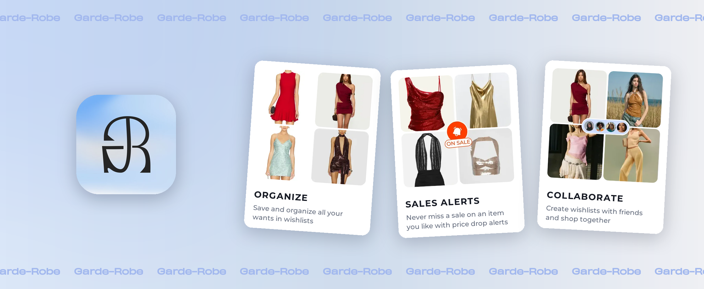
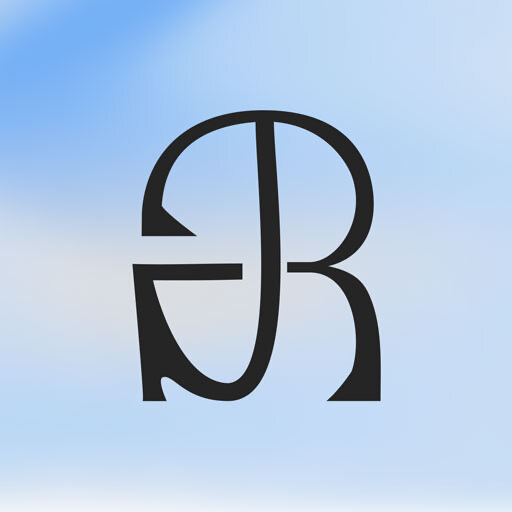
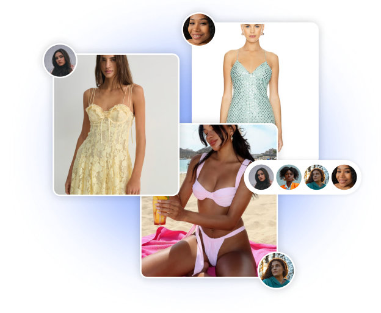
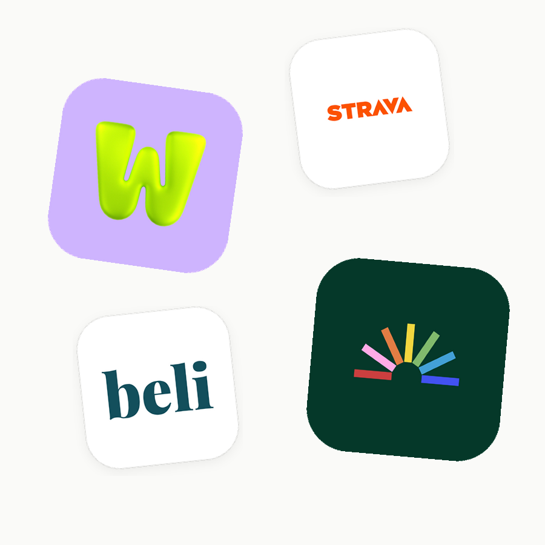
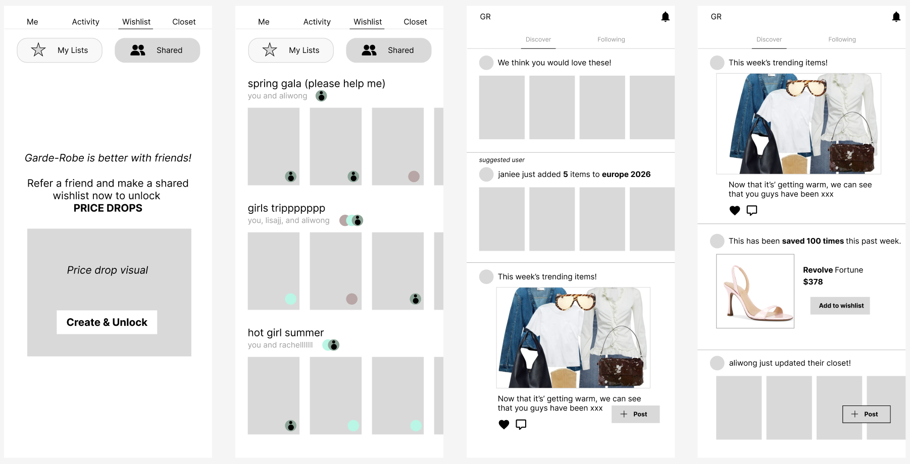
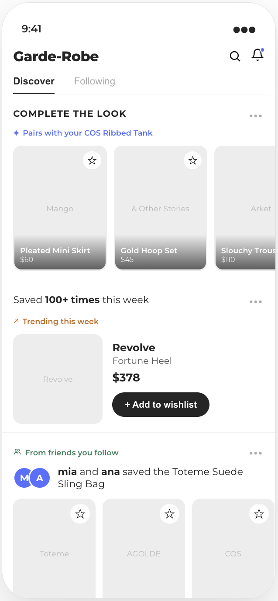
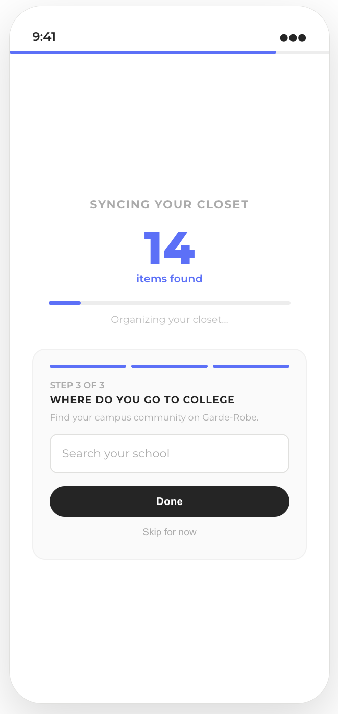
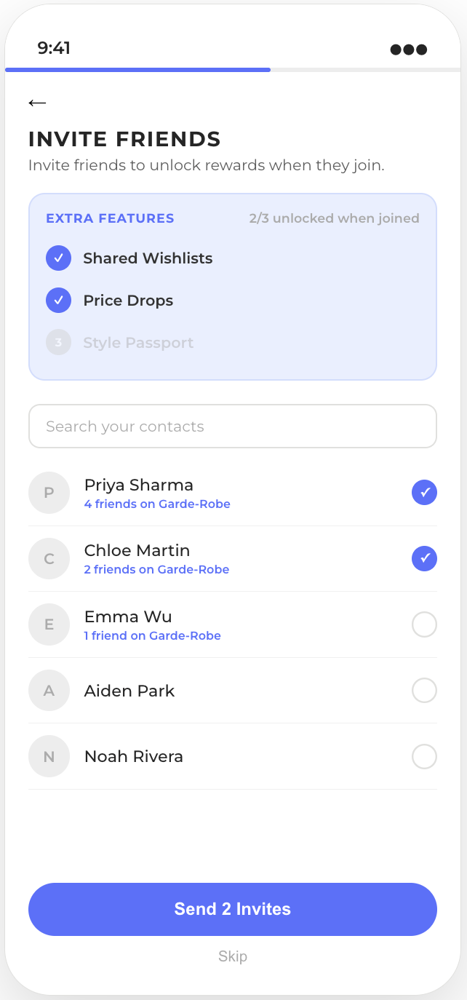
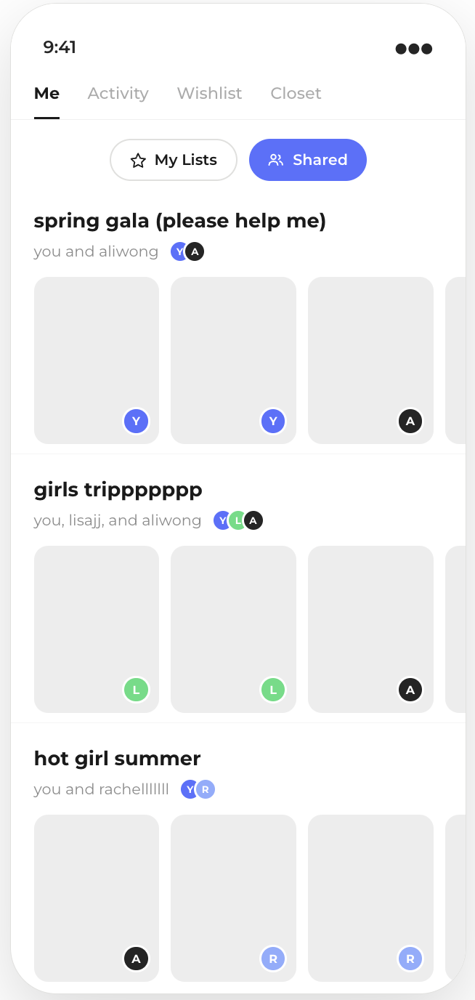

15+
user flows designed and prototyped with Claude Code across 50+ screens
50%+
fewer bug reports from user testing
5+
features going into the next version of the app
Product Management Intern at a fashion tech startup, overhauling the product into an AI-powered social commerce discovery platform.

Screens shown are prototypes. Details have been generalized and simplified for confidentiality.
01Context

Garde-Robe is a fashion and social commerce app that builds your digital closet automatically from your shopping receipts, tracks what you want with wishlists that alert you to sales, and helps you resell what you no longer wear.
I first led a 10 week client project with Garde-Robe during the Spring 2026 semester through Product Space @ Penn, a student product management club, beta testing the app and pitching recommendations to the founder. That earned an internship offer, and I joined for the summer as their Product Management Intern, reporting directly to the CEO.
02Problem
Garde-Robe had trouble finding which space in the fashion app category it wanted to be in. Beta testers found it confusing, it read as one more manual closet catalogue, and it asked for a lot of work before returning any value.
The same complaint surfaced under several different headings. The core value was not clear on first open, some of the most useful features were undiscoverable, and others felt dated to the Gen Z audience it was built for.

03Research
I tore down 8+ categories of apps across 20+ competitors, from books and music to closet and resale, to study what makes apps sticky and the social mechanics that Gen-Zs want to use.
That research produced the main concept proposal I gave to the founder, which shaped the overhaul of the app into something users would want from a fashion app.

04The overhaul
In my proposal process, I would put together lo-fidelity prototypes in Figma to visualize the components and features I wanted to change. It gave the founder a much better grasp of what I wanted to build.
These prototypes also acted as the starting point and reference for building workable versions in Claude Code.

Throughout the summer I built 15+ clickable end-to-end user flows across 50+ screens in React and TypeScript using Claude Code, iterating on screens and adding features directly based on user and founder feedback loops. I extracted the designer's design system into reusable tokens and shared components, which let me build prototypes that matched the production UI.
It changed how the team worked. Instead of handing the designer and engineering team a document to interpret, I passed over a working starting point, which cut the interpretation work on their end down significantly.
Selected feature highlights




05Tradeoffs
Since we only had the summer to ship a new version, I sequenced work by how many new users a surface would touch rather than how interesting it was to build.
That meant deprioritizing delight features, the ones that make the app feel distinct but do not bring new users in. I had already proposed and built several of them, including the style personalities, fun micro-interactions and a new design identity for the app, but we decided together to move them to a later cycle so we could prioritize user acquisition and activation.
Other key deliverables
06Learnings
“I had the pleasure of managing Kathryn this summer as a Product Manager. Throughout her internship, Kathryn demonstrated strong product instincts, attention to detail, and an impressive ability to take ownership of projects from initial research through execution. She was thoughtful about the user experience, asked the right questions, and was able to work effectively across product, design, and engineering.
What stood out most was her willingness to jump into ambiguous problems, learn quickly, and turn feedback into action. She was dependable, proactive, and genuinely invested in making the product better. I would highly recommend Kathryn to any team looking for a skilled PM!”
Sarah Findlay, CEO and Founder, Garde-Robe Inc.